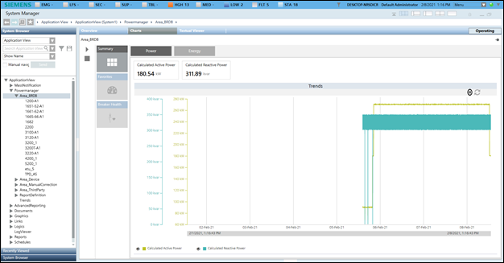
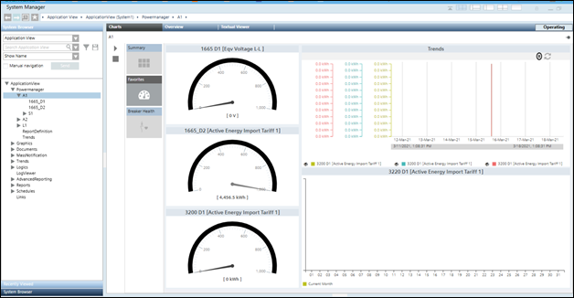
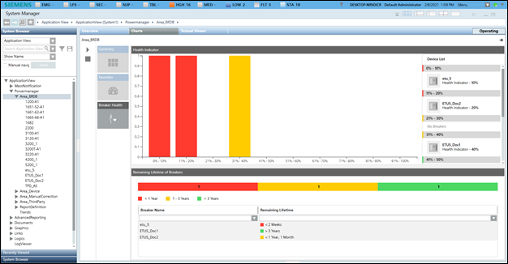

Area Monitoring
This section provides background information on monitoring an area in Powermanager. For instructions on monitoring Powermanager area, see the step-by-step section.
Summary
Displays the summary of Power and Energy.
- Power (default): Displays the Calculated Active Power and Calculated Reactive Power summary chart.
- Energy: Displays the energy consumption details. It also enables you to compare the energy consumption between 2 different time ranges. It consists of the following fields:
- Measurement Point: Displays the already configured measurement points. Also, the Compare checkbox is unchecked by default. You can select any of these points to display the trend series for the point.
- Duration: Displays the bar chart for the selected duration.
- Interval: Displays the bar chart according to the selected interval for the duration selected.
- Compare: Allows you to compare data according to the specified duration.
- Apply: Click to reflect the changes in the trend chart.
- Reset: Resets the selected values.

Favorites
Displays the control such as gauges and trends associated with their configured measurement points. There are three gauges that display the values of the configured measurement points.
- The gauges display measurement point descriptions, color range and values along with the units.
- The Trend control represents the variations in the values of a device over a specific time range. A trend can contain any number of hierarchically arranged areas for representing curves, with scales and legends. Trend view allows for a visual comparison of individual trends.
- The bar chart section displays the configured measurement point with a month as the default interval.

Breaker Health
Displays the Breaker Health which will display the health of all breakers, indicated through a bar chart and with the color coding.
- The Health Indicator indicates health of all breakers.
- The breakers whose health range from 0-20% is represented in red bars, 21-40% would be represented in yellow bars and 41-100% would be represented in green bars.
- To the right of the bar chart, all the breakers would be listed along with its name and the actual breaker health %, for each range that is plotted in the bar chart.
- Remaining lifetime of breakers indicates the remaining lifetime for all the breakers present under the selected node.
